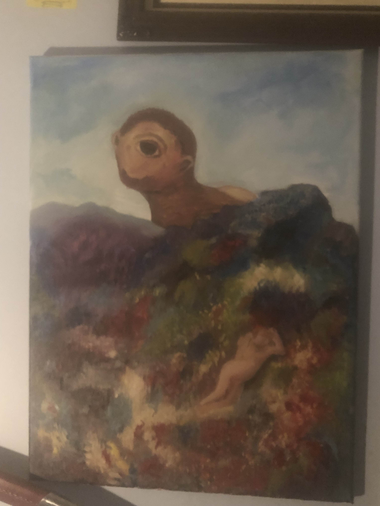
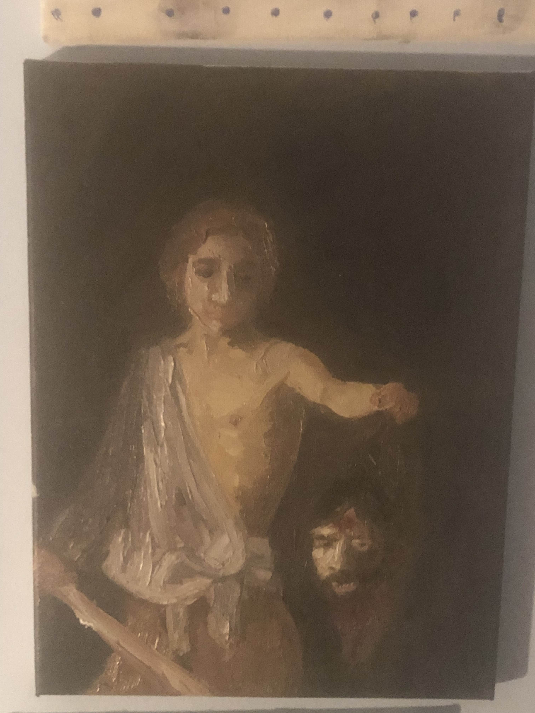
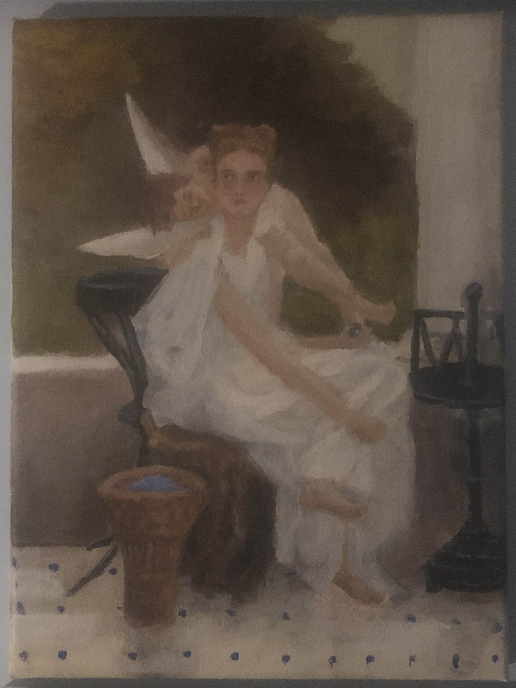
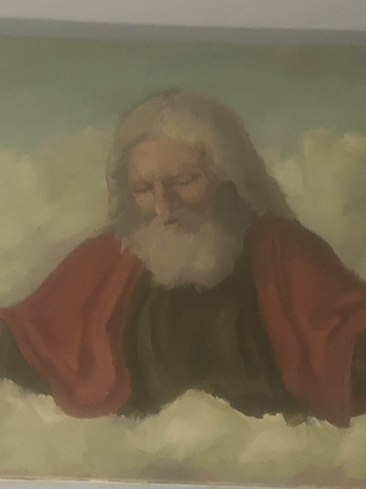

paintings
paintings
preface
i've always liked art, and i wanted to learn how to paint, so i learned from recreating famous works. sorry for the bad quality, my phone doesn't have the best camera.
art
the cyclops
david and goliath
im not sure i remember the name of this one
god, the father
i have more works, but these are my favorite
Back to Home